Hvordan bruke polycam og Blender
Polycam er en app som lager 3d modeller av bilder du tar med mobilen. Den er desverre ikke fri programvare, men det finnes mer tekniske, frie programmer som kan gjøre det samme på pc.
Polycam kan lastes ned til android og iphone
Første gang du åpner appen blir du spurt om å lage en bruker. etter du har registrert deg får du opp denne skjermen:
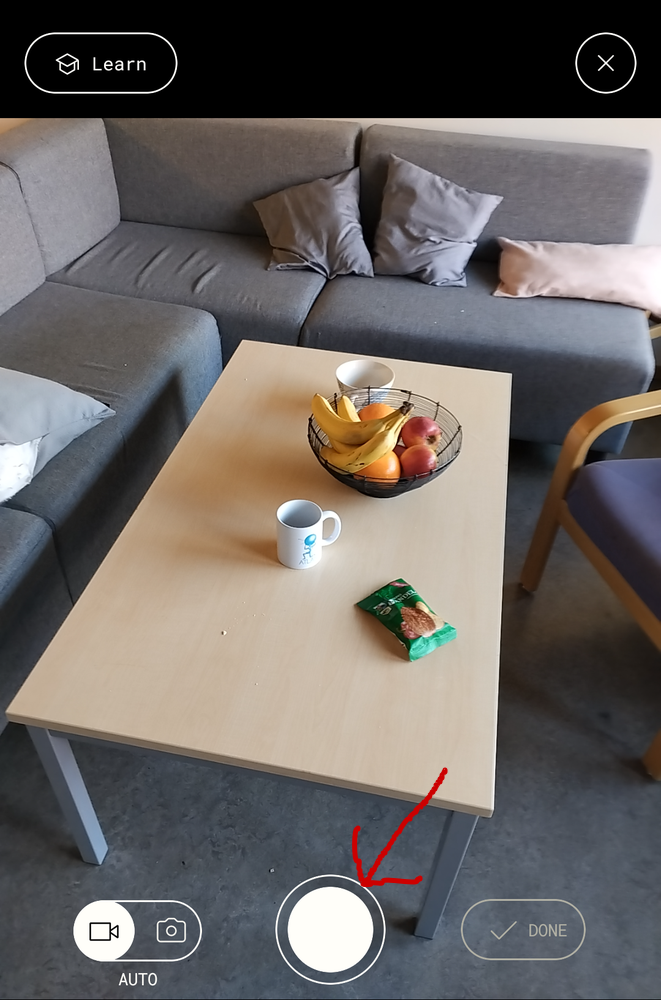
Nå er det bare å trykke på den hvit knappen så tar den automatisk bilder når du beveger deg rundt motivet.
Når du er ferdig trykker du på knappen som heter “Done”:
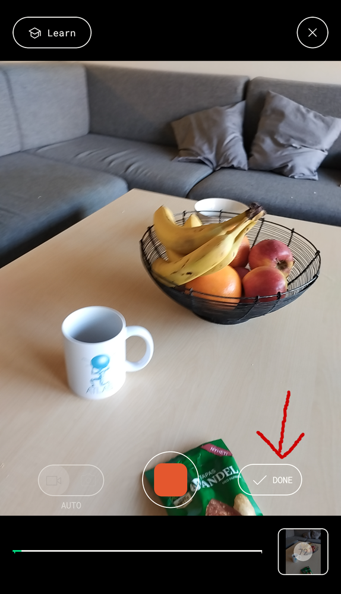
Da år du opp en skjerm som ser slik ut:
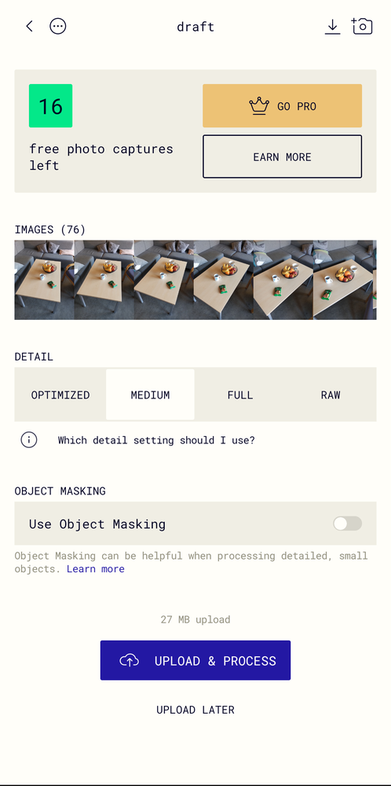
“Detail” styrer hvor stor fila blir, medium er som regel nok. “Object Masking” prøver å klippe vekk bakgrunn fra modellen så du kun sitter igjen med motivet. I første omgang er et lurt å skru den av.
Trykk “Upload & process” og vent på at den gjør seg ferdig.
Når modellen er klar kan trykke inn og se hvordan den ble
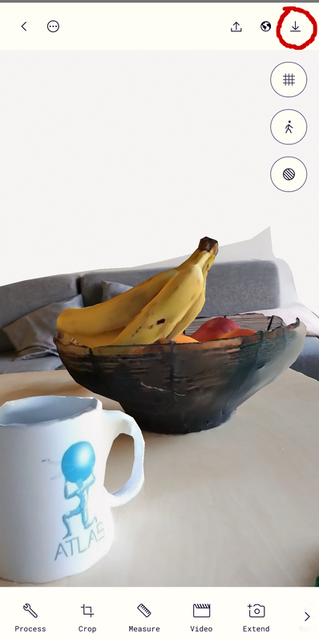
For å kunne se nøye på modellen er det lurt å åpne den i Blender på pcen. For å eksportere modellen trykker man på nedlastingsikonet of velger GLTF. Deretter må du på en eller annem måte overføre den til pcen.
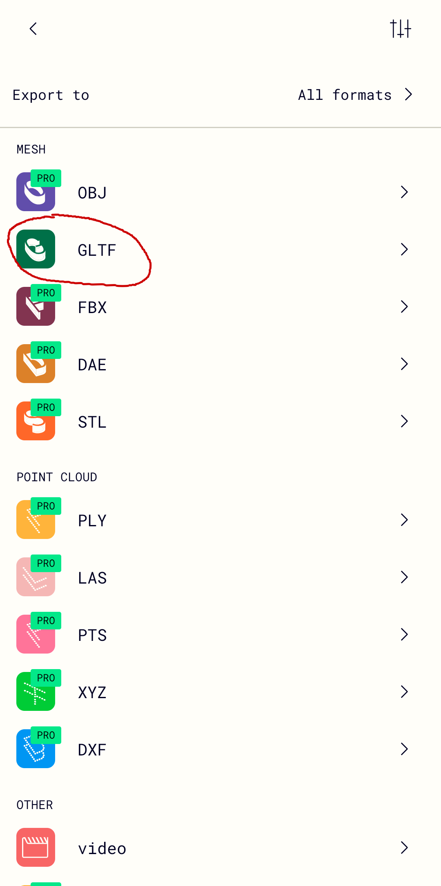
På pcen må du ha Blender installert. Windows og Mac versjoner finnes på https://www.blender.org/, mens Linux versjonen hentes fra Flathub.
Blender brukes til å lage både dataspill og hollywood filmer, men for oss funker det også fint til å titte på 3d modeller.
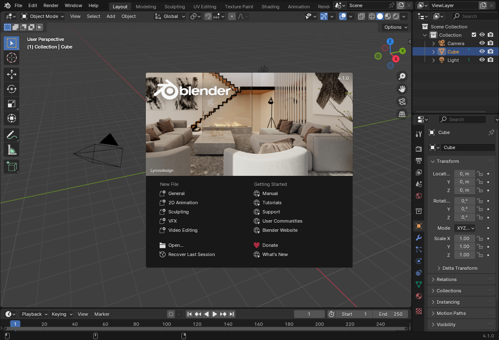
Først sletter vi standardkuben ved å høyreklikke og velge delete
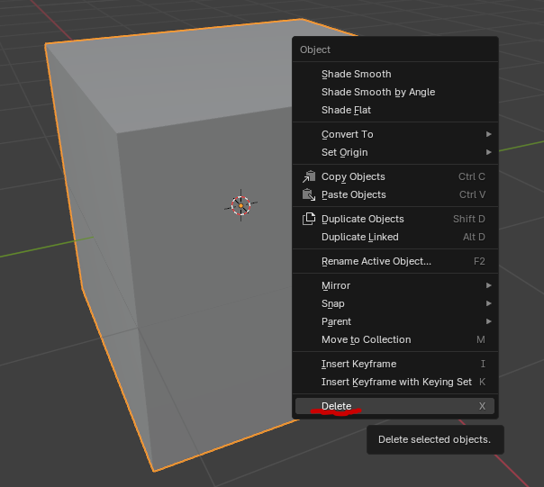
Så importerer modellen vår ved å trykke på File->Import->glTF
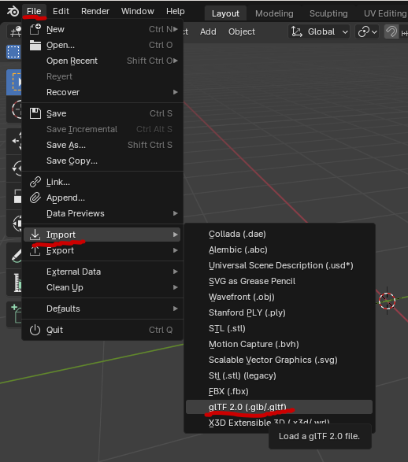
Deretter navigerer du til mappa med .glb fila fra Polycam og dobbeltrykker på den:
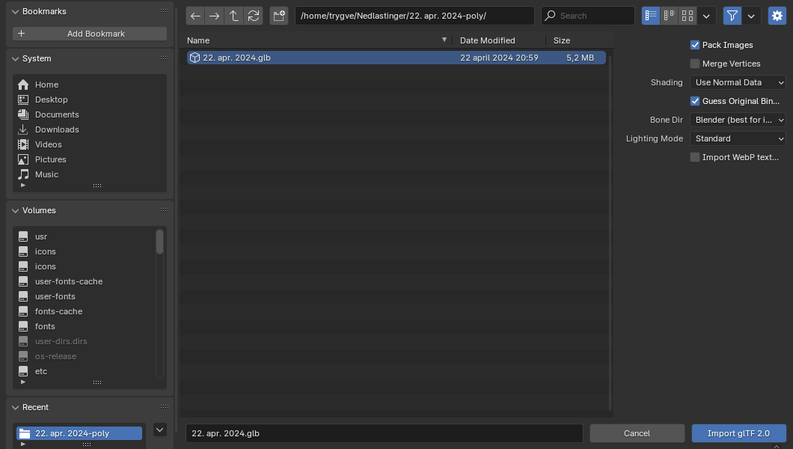
Nå kan du rotere deg rundt, zoome inn og inspisere modellen.
For å fargelegge modellen må du velge shading oppe til høyre:
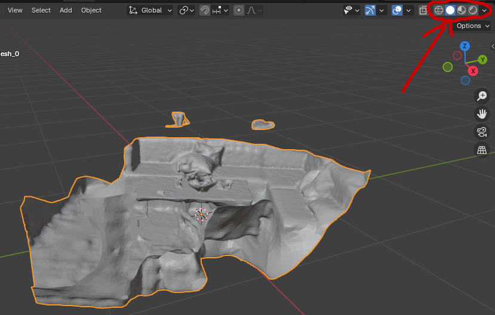 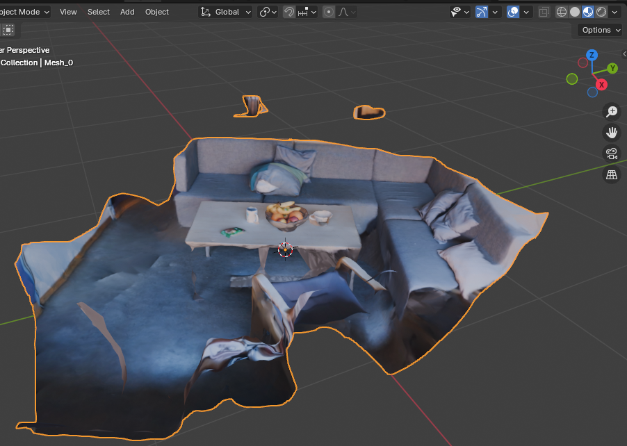
Blender kan være litt knotete både med og uten datamus, men det finnes mye info i manualen: https://docs.blender.org/manual/en/latest/editors/3dview/navigate/navigation.html
Det går også an å skru på spaseringsnavigasjon: https://docs.blender.org/manual/en/latest/editors/3dview/navigate/walk_fly.html
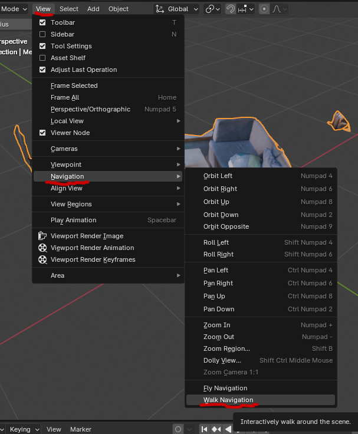